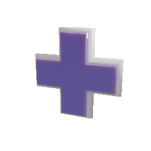

Youth and pleasure are vanity .. and times permits us miserable mortals, puffed up with emptiness, thus to wander about, until finally, coming to a tardy consciousness of our sins, we shall learn to know ourselves.
I have taken pride in others, never in myself, and however insignificant I may have been, I have always been still less important in my own judgment.
My style, as many claimed, was clear and forcible; but to me it seemed weak and obscure.
For habit and play has almost the potency of itself.
I have taken pride in others, never in myself, and however insignificant I may have been, I have always been still less important in my own judgment.
My style, as many claimed, was clear and forcible; but to me it seemed weak and obscure.
For habit and play has almost the potency of itself.